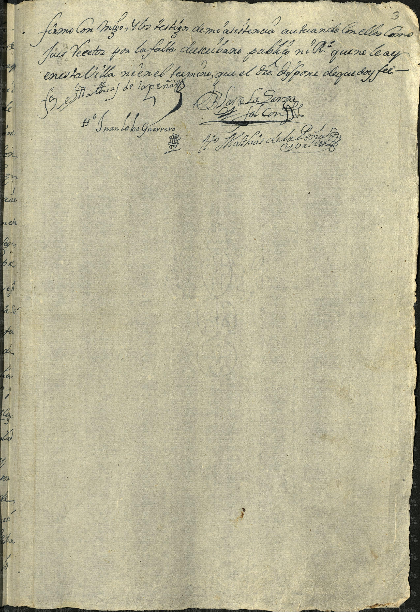
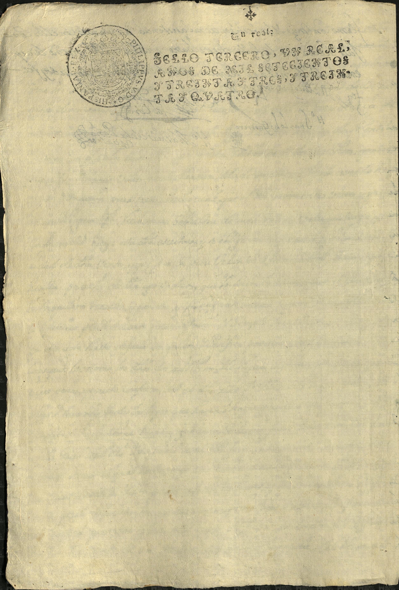

Blas de la Garza Falcón


| Fondo | Presidencia Municipal (PM) |
| Firma AMS | AMS, PM, c 12, e 23, 3 ff |
| Fecha | 16 de mayo de 1733 (según la ficha del catálogo) |
| Descripción de la ficha del catálogo (tal cual) | Blas de la Garza Falcón, vecino del Real de las Sabinas del Nuevo Reino de León, vende a Ana María de Almandos 50 sitios de ganado, 45 de ganado menor y cinco de mayor, en precio de 2 mil pesos de oro común. |
| Id de ficha en el portal | 61023 |
| Personas indexadas en la ficha | Blas de la Garza Falcón, Ana María de Almandos |
Transcripción pendiente. La imagen se publica con la descripción de la ficha del catálogo; no se ha leído línea por línea.
Imagen y ficha: Archivo Municipal de Saltillo, Sefarad MX. Fuente: Archivo Municipal de Saltillo, portal del archivo digital (Presidencia Municipal). Verificado y avalado por Sefarad MX · genealogiasefardi.site.